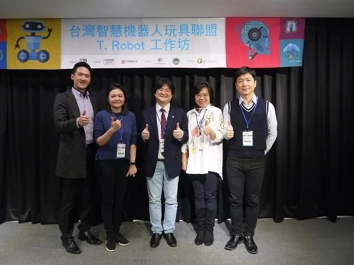
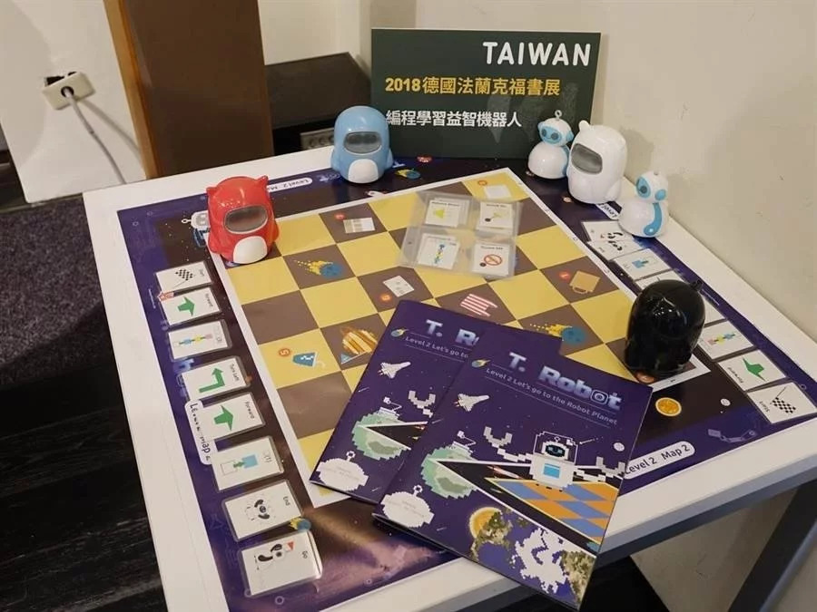

媒體消息

眾所皆知，「108課綱」即將於今年(2019)八月上路，檢視箇中亮點特色，在於將資訊科技學習向下延伸，列為國、高中必修科目，且學習內涵以運算思維(Computational Thinking)為主軸，期使學生懂得善用資訊科技工具解決問題、合作共創、溝通表達。面對新課綱浪潮，國中小學老師急欲跳脫傳統教學框架、針對運算思維加強進修，以增添教學利器，完成跨領域教學任務。(Run！PC)

T. Robot設計的主要目的，是從小培養兒童以運算思維建立邏輯思考的能力，做為兒童的第一套台灣原創程式教育啟蒙工具。課程設計給5-8歲孩童以不插電方式學習程式語言。在正式學習程式語言前，孩子需要學習運算思維及解決問題的能力；運算思維包含邏輯、創意思考、分析問題等能力，透過這些能力尋找解決問題的方法，而這些方法可以透過解析，把大的問題拆解成小問題，尋找共通點（模式化），及利用清楚的步驟（演算法）來解決問題。最終希望孩童能在學習及日常生活中善用這些能力和方法來解決問題。(中時電子報)
在這次的「台灣智慧機器人玩具聯盟」的交流研討會中，主辦單位邀請到英閱音躍研創 李佳曄 總經理以及康乃薾雙語中小學 游馥華主任（T. Robot 程式啟蒙教材作者），他們將從教育現場的所見所得、實際從事運算思維教材設計的經驗，來分享如何訓練運算思維，以及運算思維如何在生活中發揮引導效果。